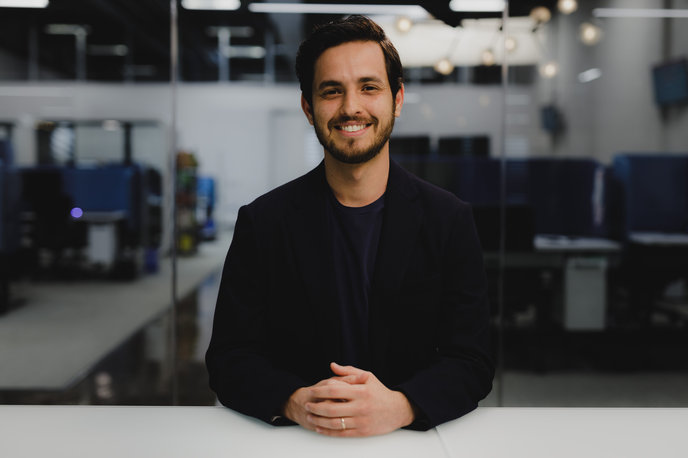

Talks & Media
Podcasts, presentations, and demos.

Building models to teach robots do useful things, especially in manufacturing. I lead the Robot Learning team at Path Robotics, where we're bringing physical AI to manufacturing.
Previously led Perception and Weld Intelligence teams (Obsidian). PhD in Geodetic Engineering from The Ohio State University, specializing in photogrammetry and computer vision.

Podcasts, presentations, and demos.
Path Robotics
I'm currently Director of AI at Path. I led our Perception and Weld Intelligence teams and right now leading our Robot Learning team. We launched Autonmous Welding (AW-3), our flagship product for welding, and Autonomous Fit up (AF-1), a lights out solution for assembling and welding industrial parts. My current focus is on world models, memory, and long horizon robot learning.
The Ohio State University
Completed my PhD in Geodetic Engineering, focusing on photogrammetry and computer vision with Alper Yilmaz at PCVLab. My research contributed to advancements in human tracking. I was particularly interested in thinking about deep learning from a geometric point of view. Along the way I interned at PixElement and Huntington . I was fortunate to work with Rongjun Qin and his team at Geospatial Data Analytics Lab and also with Levent Guvenc and his team at the Automated Driving Lab.
Amirkabir University of Technology
Soon after starting my bachelors in Civil Engineering, I realized that I was more interested in the programming and math side of engineering. So, I decided to curate my own computer science syllabus and audited many computer science courses. Andrew Ng's course on Coursera was my first exposure to deep learning and I started my journey in AI by working on crack detection in structures.